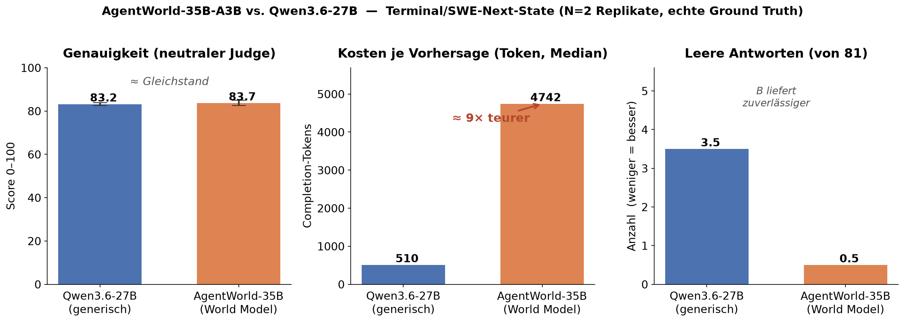

Ein reproduzierbarer Benchmark gegen das generische Qwen3.6-27B — mit echter Ground Truth, neutralem Judge und Replikaten.
Auf reproduzierbaren Terminal-Next-State-Aufgaben ist AgentWorld-35B-A3B nicht messbar genauer als das generische Qwen3.6-27B. Es ist zuverlässiger (fast nie leere Ausgabe), aber ~9× token-teurer. Die Behauptung „3× besser / alle Agenten besser" ist auf dieser Basis nicht gedeckt.
Auf LinkedIn machte ein neues Modell die Runde: Qwen-AgentWorld-35B-A3B, gefeiert als „der neue heiße Scheiß" — angeblich laufen damit alle Agenten besser, der Code besser, „alles 3× besser". Solche Sätze sind billig. Messen ist teuer. Also habe ich gemessen.
Weil Hype und Realität bei LLMs selten deckungsgleich sind — und weil die Behauptung hier eine versteckte Annahme enthält, die sich beim ersten Blick in die Modellkarte auflöst.
Laut Modellkarte ist AgentWorld kein Policy-/Agenten-Modell, sondern ein World Model:
# Input: (Umgebungs-Zustand + Verlauf) + geplante Agenten-Aktion # Output: vorhergesagter naechster Umgebungs-Zustand (Observation)
Es entscheidet nicht, welche Aktion zu tun ist — es simuliert, was die Umgebung zurückgibt. Der Hype behandelt es dagegen wie ein besseres Coding-Brain. Das ist ein Kategorie-Fehler. Mein Benchmark testet deshalb beides: das, wofür es gebaut ist (Zustände vorhersagen — „Track 2"), und das, was der Hype unterstellt (als Agenten-Brain Aufgaben lösen — „Track 1").
| Kürzel | Modell | Hardware | Quant |
|---|---|---|---|
| A | Qwen3.6-27B (generisch) | 2× RTX 3090 (lokal) | int4-AutoRound |
| B | Qwen-AgentWorld-35B-A3B | 1× RTX PRO 5000 (Cloud) | NVFP4 |
Bewusst kein steriler Laborvergleich, sondern „wie es real läuft". Jede daraus folgende Verzerrung ist offen dokumentiert (THREATS.md, SCOPE.md).
Der Kern jeder belastbaren Messung: die „richtige Antwort" wird nicht ausgedacht, sondern
real ausgeführt. Jede Befehlsfolge läuft in einer frischen Sandbox in einer
durchgehenden Shell-Session (damit cd, Variablen und Dateizustand
persistieren wie in einem echten Terminal), und der tatsächliche Output wird als Wahrheit gespeichert.
# scripts/gen_triples.py — Aktion im AKTUELLEN Shell-Kontext ausfuehren # (kein $(...), das waere eine Subshell -> cd ginge verloren) { $action ; } > $o 2> $e ; ____ec=$? ____out=$(cat $o); ____err=$(cat $e) # -> Triple: { history, action, truth:{stdout, stderr, exit_code, fs_delta} }
→ scripts/gen_triples.py
So entstanden 81 Triples über Kategorien wie Fehler/Tracebacks, Python, git, Textverarbeitung, lange Zustandsketten, „pre-existing"-Inferenz und SWE (unittest fehlschlagen → fixen → grün).
Ein World Model muss man so betreiben, wie es trainiert wurde. Die Modellkarte sagt klar: Thinking ist an (das Modell „denkt" über den Zustandsübergang, bevor es die Observation ausgibt). Also: AgentWorlds eigener Domänen-System-Prompt, das offizielle Eingabeformat, Thinking an, empfohlenes Sampling — für beide Modelle identisch.
# harness/run_track2_worldmodel.py — Multi-Turn im offiziellen Format msgs = [{"role":"system", "content": system_prompt(domain)}] # offizieller Prompt for h in history: msgs += [user(f"Action: execute_bash\nCommand: {h['action']}"), assistant(h["observation"])] msgs += [user(f"Action: execute_bash\nCommand: {action}")] resp = cli.chat(msgs, max_tokens=16384) # Thinking AN (Default), grosses Budget
→ harness/run_track2_worldmodel.py
Das Modell gibt den ganzen Terminal-Screen aus (Prompt + Echo + Output). Deterministisch zählen wir Recall über die echten sichtbaren Zeilen — robust gegen Format-Beiwerk, hart bei falschem Inhalt. Für „pre-existing"-Fälle (z. B. eine Versionsnummer, die das Modell gar nicht wissen kann) braucht es ein Plausibilitätsurteil — dafür ein neutraler dritter Judge.
# harness/graders.py — Recall ueber sichtbare stdout/stderr-Zeilen lines = [normalize(l) for l in truth_stdout.splitlines() if l.strip()] recall = sum(1 for l in lines if l in prediction_norm) / len(lines)
→ harness/graders.py
Bevor ein Modell als Judge zum Einsatz kam, habe ich es validiert. An einem
Plausibilitäts-Fall (vorhergesagte Python-Version 3.11.11 vs. wahre
3.12.3 — beides plausibel, „pre-existing") zeigte sich:
| Judge | Plausibler Fall → soll hoch | Determ. falsch → soll niedrig |
|---|---|---|
| gpt-4o-mini | 0 ✗ | 0 ✓ |
| mistral-small-24b | 90 ✓ | 0 ✓ |
Das teurere Modell war hier der schlechtere Judge. Gewählt wurde mistral-small (günstiger und korrekt). Derselbe Judge bewertet A und B → vergleichbar.
Bei temperature 0.6 schwankt jeder Lauf. Eine einzelne Messung ist eine
Anekdote. Also mehrere Durchläufe und Auswertung als Mittel ± Spannweite.
Nachvollziehbarkeit heißt auch: zeigen, wo die eigene Messung fast falsch gewesen wäre. Fünf Bugs hätten still falsche Zahlen produziert. Jeder wurde gefangen, gefixt, dokumentiert.
enable_thinking=false — genau der Mechanismus, mit dem
AgentWorld Zustände vorhersagt. Ergebnis: ein falscher „Gleichstand". Fix: Thinking an, offizielles Setup.SSLKEYLOGFILE auf ein Filter-Device, das Python nicht öffnen kann →
intermittenter Crash. Fix: die Variable beim Start entfernen.Genau diese fünf Fälle sind der Unterschied zwischen einem LinkedIn-Hot-Take und einer Messung, auf die man sich verlassen kann.

| Metrik | A = Qwen3.6-27B | B = AgentWorld-35B | |
|---|---|---|---|
| Genauigkeit — neutraler Judge | 83.2 (82.5–83.8) | 83.7 (82.6–84.9) | Gleichstand |
| Genauigkeit — det. Recall | 77.4 (76.9–77.8) | 79.4 (77.8–81.1) | Gleichstand |
| Token / Vorhersage (Median) | 510 | ~4 742 | B ~9,3× teurer |
| Leere Antworten / 81 | 3,5 (3–4) | 0,5 (0–1) | B zuverlässiger |
| Track 1 — Agent-Tasks gelöst | 3/3 | 3/3 | beide |
Auf den meisten Kategorien sitzen beide am Ceiling (git, Python, stateful, Textverarbeitung je 100/100). Die Genauigkeit ist über beide Metriken ein Gleichstand. Der einzige robuste, große Unterschied liegt in den Kosten (Faktor ~9) und der Zuverlässigkeit (B liefert fast immer eine Ausgabe, A verdenkt sich gelegentlich zu nichts).
In einem einzelnen Lauf sah B auf den schweren „Anti-Ceiling"-Aufgaben deutlich vorn aus — Judge-Factuality 79 vs. 63 für A. Ich hätte daraus fast eine Schlagzeile gemacht („AgentWorld glänzt auf seinem Heimspiel").
Unter Replikation wusch sich dieser Vorsprung weitgehend weg. Er war großteils Sampling-Rauschen (temp 0.6, n=1).
Genau dafür macht man Replikate. Wer bei LLM-Vergleichen einen Lauf macht und eine Zahl postet, postet mit hoher Wahrscheinlichkeit Rauschen.
AgentWorld-35B-A3B ist auf reproduzierbaren Terminal-Next-State-Aufgaben nicht messbar genauer als ein generisches Qwen3.6-27B. Es ist auf seiner Kern-Aufgabe zuverlässiger (kaum leere Ausgaben) — aber ~9× token-teurer.
Das ist kein „Snake Oil": Ein World Model, das Umgebungen treu simuliert, hat legitime Anwendungen (z. B. Rollouts/Planung ohne reale Ausführung). Aber die populäre Schlagzeile — „3× besser, alle Agenten laufen besser" — misst es schlicht an der falschen Aufgabe und hält der Messung nicht stand.
Voller Wortlaut: SCOPE.md · THREATS.md
Das gesamte Repository ist reproduzierbar — Ground-Truth-Generierung, Vorhersagen, neutraler Judge, Aggregation und Charts in einem Befehl:
# Endpoints + OpenRouter-Judge-Key in .env eintragen, dann: bash scripts/run_full_measurement.sh 3 # 3 Replikate, Track 1 + 2 python scripts/final_report.py # Bilanz + summary.json python scripts/make_charts.py # Grafiken
Relevante Dateien: harness/ (Client, Grader, Runner, neutraler Judge),
scripts/gen_triples.py (Ground Truth), config/prompts/
(offizielle AgentWorld-Prompts), docs/ (Methodik, Threats, Scope, Befunde).